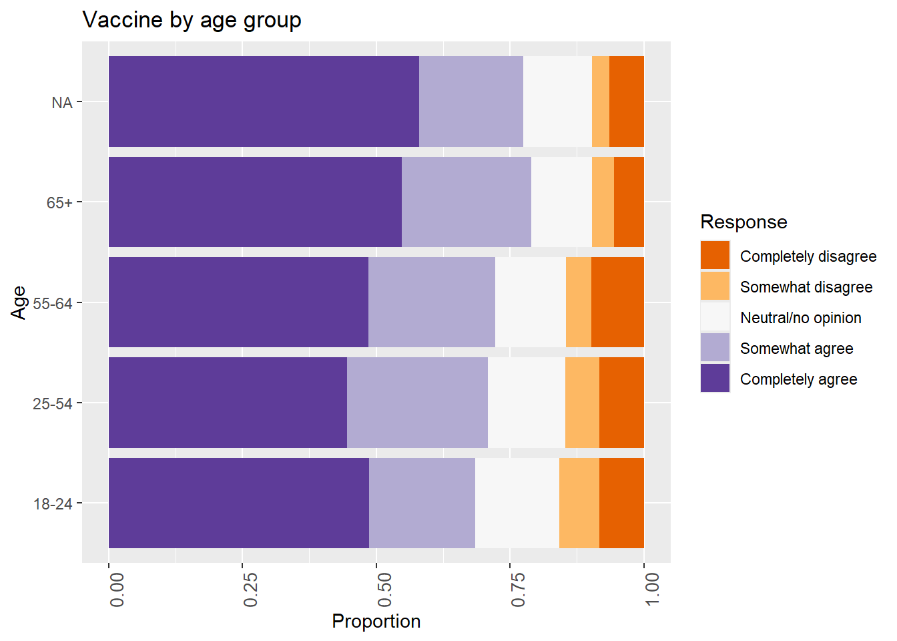

Appendix 1: COVID-19 Vaccine paper
see: Open Peer Review
loading and wrangling data
library(tidyverse)
library(MASS)
data <- read.csv(here::here("data/Data_share_covid-19-vaccination_2020-10-04.csv")) #fix all
data$Gender_r <- factor(ifelse(
data$Gender == 1, "Male",
ifelse(data$Gender == 2, "Female", "Other")
),ordered = FALSE)
data$within_fct <- factor(data$within_country,levels = c(
1,2,3,4,5,6), labels = c(
"<20%",
"20-40%",
"40-60%",
"60-80%",
">80%",
"Refused"
))
data$ww_fct <- factor(data$world_wide, levels = c(
1,2,3,4,6), c(
"<$2 per day",
"$2-$8 per day",
"$8-$32 per day",
"$32+",
"Refused"
))
data$educ_fact <- factor(data$Universal_edu,
levels = c(
1,2,3,4
), labels = c(
"Less than high school",
"High school some college",
"Bachelor",
"Post Graduate"
))
data$country_name <- as.factor(ifelse( #this is by far one of the most egregios pieces of code I have written please forgive me I was tired and hit a wall and now I am too lazy to change it to something more elegant
data$Country == 1,"Brazil",
ifelse(data$Country == 2, "Canada",ifelse(
data$Country == 3, "China",ifelse(
data$Country == 4, "Ecuador",ifelse(
data$Country == 5, "France",ifelse(
data$Country == 6, "Germany",ifelse(
data$Country == 7, "India",ifelse(
data$Country == 8, "Italy",ifelse(
data$Country == 9, "Mexico",ifelse(
data$Country == 10, "Nigeria",ifelse(
data$Country == 11, "Poland",ifelse(
data$Country == 12, "Russia",ifelse(
data$Country == 13, "South Africa",
ifelse(
data$Country == 14, "South Korea",ifelse(
data$Country == 15, "Singapore",
ifelse(
data$Country == 16, "Spain",
ifelse(
data$Country == 17, "Sweden",ifelse(
data$Country == 18, "United Kingdom",ifelse(
data$Country == 19, "United States","l"
))))))))))))))))))))
data$agegroup_fct <- factor(x = data$Age_grou, levels = c(1,
2,
3,
4),
labels = c("18-24",
"25-54",
"55-64",
"65+"), ordered = FALSE)
#mortlity factor
data$mortality_fct <- cut(as.numeric(data$mortalityperm),
c(-Inf,200,400,Inf),labels = c(
"low",
"medium",
"high"
))
#!!!casesperm does not exist in the data!!!###
#case factor
#data$case_fct <- cut(as.numeric(data$casesperm),
# c(-Inf,2000,4000,Inf),labels = c(
# "low",
# "medium",
# "high"
# ))
###just the index vars
data_test <- data[,4:13]
###make group data
# need to make pop covid and need to make pop COVIDQuestion:I would follow my employer’s recommendation to get a COVID-19 vaccine once the government has approved it as safe and effective.
data$Busines2_fct <- factor(data$Business2,
levels = c(
1,
2,
3,
4,
5
),
labels = c(
"Completely disagree",
"Somewhat disagree",
"Neutral/no opinion",
"Somewhat agree",
"Completely agree"
))
summary(data$Busines2_fct)## Completely disagree Somewhat disagree Neutral/no opinion Somewhat agree
## 1179 2299 3488 4579
## Completely agree
## 1881#busi by gender
gender <- ggplot(
data = data
)+
geom_bar(aes(
x = Gender_r,
fill = Busines2_fct
), stat = 'count', position = 'fill')+
theme(axis.text.x = element_text(angle = 90, size = 10))+
coord_flip()+
labs(title = "Business by gender")+
xlab("Proportion")+
ylab("Gender")+
scale_fill_brewer("Response", type = "div", palette = 4)
gender
#busi by age
age <- ggplot(
data = data
)+
geom_bar(aes(
x = agegroup_fct,
fill = Busines2_fct
), stat = 'count', position = 'fill')+
theme(axis.text.x = element_text(angle = 90, size = 10))+
coord_flip()+
labs(title = "Business by age")+
ylab("Proportion")+
xlab("Age")+
scale_fill_brewer("Response", type = "div", palette = 4)
age
##busi by income
inc <- ggplot(
data = data
)+
geom_bar(aes(
x = ww_fct,
fill = Busines2_fct
), stat = 'count', position = 'fill')+
theme(axis.text.x = element_text(angle = 90, size = 10))+
coord_flip()+
labs(title = "Business by income")+
ylab("Proportion")+
xlab("Income level")+
scale_fill_brewer("Response", type = "div", palette = 4)
inc
##busi by education
educ <- ggplot(
data = data
)+
geom_bar(aes(
x = educ_fact,
fill = Busines2_fct
), stat = 'count', position = 'fill')+
theme(axis.text.x = element_text(angle = 90, size = 10))+
coord_flip()+
labs(title = "Business by education")+
ylab("Proportion")+
xlab("Education level")+
scale_fill_brewer("Response", type = "div", palette = 4)
educ
#simple country plot
country <- data %>%
count(country_name = country_name, Busines2_fct = Busines2_fct)%>%
mutate(pct = prop.table(n)) %>%
ggplot(aes(x = country_name,
y = pct,label = scales::percent(pct, accuracy = 3)))+
geom_bar(aes(
fill = Busines2_fct
), position = 'fill', stat = "identity")+
#geom_text(position = 'fill') +
theme(axis.text.x = element_text(angle = 90, size = 10))+
coord_flip()+
#labs(title = "Business by country")+
ylab("Proportion")+
xlab("Country")+
scale_fill_brewer("Response", type = "div", palette = 4)
country
#ggsave(filename = "figure-bus-vax.pdf", plot = country, path = "covid-score/vaccine paper/", width = 10, height = 7)
#busi by coutry x gender
gender <- ggplot(
data = data
)+
geom_bar(aes(
x = country_name,
fill = Busines2_fct
), stat = 'count', position = 'fill')+
facet_wrap(~Gender_r)+
theme(axis.text.x = element_text(angle = 90, size = 10))+
coord_flip()+
labs(title = "Business by country by gender")+
ylab("Proportion")+
xlab("Country")+
scale_fill_brewer("Response", type = "div", palette = 4)
gender
#country by age
age <- ggplot(
data = data
)+
geom_bar(aes(
x = country_name,
fill = Busines2_fct
), stat = 'count', position = 'fill')+
facet_wrap(~agegroup_fct)+
theme(axis.text.x = element_text(angle = 90, size = 10))+
coord_flip()+
labs(title = "Business by country by age")+
ylab("Proportion")+
xlab("Country")+
scale_fill_brewer("Response", type = "div", palette = 4)
age
#country by income
inc <- ggplot(
data = data
)+
geom_bar(aes(
x = country_name,
fill = Busines2_fct
), stat = 'count', position = 'fill')+
facet_wrap(~ww_fct)+
theme(axis.text.x = element_text(angle = 90, size = 10))+
coord_flip()+
labs(title = "Business by country by income")+
ylab("Proportion")+
xlab("Country")+
scale_fill_brewer("Response", type = "div", palette = 4)
inc
#country by education
educ <- ggplot(
data = data
)+
geom_bar(aes(
x = country_name,
fill = Busines2_fct
), stat = 'count', position = 'fill')+
facet_wrap(~educ_fact)+
theme(axis.text.x = element_text(angle = 90, size = 10))+
coord_flip()+
labs(title = "Business by country by education")+
ylab("Proportion")+
xlab("Country")+
scale_fill_brewer("Response", type = "div", palette = 4)
educ
Question:If a COVID-19 vaccine is proven safe and effective and is available to me, I will take it.
data$Vaccine_fct <- factor(data$Vaccine,
levels = c(
1,
2,
3,
4,
5
),
labels = c(
"Completely disagree",
"Somewhat disagree",
"Neutral/no opinion",
"Somewhat agree",
"Completely agree"
))
summary(data$Vaccine_fct)## Completely disagree Somewhat disagree Neutral/no opinion Somewhat agree
## 1091 819 1912 3318
## Completely agree
## 6286#Vaccine_fct by gender
gender <- ggplot(
data = data
)+
geom_bar(aes(
x = Gender_r,
fill = Vaccine_fct
), stat = 'count', position = 'fill')+
theme(axis.text.x = element_text(angle = 90, size = 10))+
coord_flip()+
labs(title = "Vaccine by gender")+
ylab("Proportion")+
xlab("Gender")+
scale_fill_brewer("Response", type = "div", palette = 4)
gender
#Vaccine_fct by age
age <- ggplot(
data = data
)+
geom_bar(aes(
x = agegroup_fct,
fill = Vaccine_fct
), stat = 'count', position = 'fill')+
theme(axis.text.x = element_text(angle = 90, size = 10))+
coord_flip()+
labs(title = "Vaccine by age group")+
ylab("Proportion")+
xlab("Age")+
scale_fill_brewer("Response", type = "div", palette = 4)
age
##Vaccine_fct by income
inc <- ggplot(
data = data
)+
geom_bar(aes(
x = ww_fct,
fill = Vaccine_fct
), stat = 'count', position = 'fill')+
theme(axis.text.x = element_text(angle = 90, size = 10))+
coord_flip()+
labs(title = "Vaccine by income")+
ylab("Proportion")+
xlab("Income")+
scale_fill_brewer("Response", type = "div", palette = 4)
inc##Vaccine_fct by education
educ <- ggplot(
data = data
)+
geom_bar(aes(
x = educ_fact,
fill = Vaccine_fct
), stat = 'count', position = 'fill')+
theme(axis.text.x = element_text(angle = 90, size = 10))+
coord_flip()+
labs(title = "Vaccine by education")+
ylab("Proportion")+
xlab("Education")+
scale_fill_brewer("Response", type = "div", palette = 4)
educ##vaccine by country
country <- data %>%
count(country_name = country_name, Vaccine_fct = Vaccine_fct)%>%
mutate(pct = prop.table(n)) %>%
ggplot(aes(x = country_name,
y = pct,label = scales::percent(pct, accuracy = 3)))+
geom_bar(aes(
fill = Vaccine_fct
), position = 'fill', stat = "identity")+
#geom_text(position = 'fill') +
theme(axis.text.x = element_text(angle = 90, size = 10))+
coord_flip()+
#labs(title = "Business by country")+
ylab("Proportion")+
xlab("Country")+
scale_fill_brewer("Response", type = "div", palette = 4)
country#ggsave(filename = "figure-vax-vax.pdf", plot = country, path = "covid-score/vaccine paper/", width = 10, height = 7)
gender <- ggplot(
data = data
)+
geom_bar(aes(
x = country_name,
fill = Vaccine_fct
), stat = 'count', position = 'fill')+
facet_wrap(~Gender_r)+
theme(axis.text.x = element_text(angle = 90, size = 10))+
coord_flip()+
labs(title = "Vaccine by country by gender")+
ylab("Proportion")+
xlab("Country")+
scale_fill_brewer("Response", type = "div", palette = 4)
genderage <- ggplot(
data = data
)+
geom_bar(aes(
x = country_name,
fill = Vaccine_fct
), stat = 'count', position = 'fill')+
facet_wrap(~agegroup_fct)+
theme(axis.text.x = element_text(angle = 90, size = 10))+
coord_flip()+
labs(title = "Vaccine by country by age")+
ylab("Proportion")+
xlab("Country")+
scale_fill_brewer("Response", type = "div", palette = 4)
ageinc <- ggplot(
data = data
)+
geom_bar(aes(
x = country_name,
fill = Vaccine_fct
), stat = 'count', position = 'fill')+
facet_wrap(~ww_fct)+
theme(axis.text.x = element_text(angle = 90, size = 10))+
coord_flip()+
labs(title = "Vaccine by country by income")+
ylab("Proportion")+
xlab("Country")+
scale_fill_brewer("Response", type = "div", palette = 4)
inceduc <- ggplot(
data = data
)+
geom_bar(aes(
x = country_name,
fill = Vaccine_fct
), stat = 'count', position = 'fill')+
facet_wrap(~educ_fact)+
theme(axis.text.x = element_text(angle = 90, size = 10))+
coord_flip()+
labs(title = "Vaccine by country by education")+
ylab("Proportion")+
xlab("Country")+
scale_fill_brewer("Response", type = "div", palette = 4)
educregression
data$biz_reg <- ifelse(data$Business2 > 3, 1, 0)
fit2 <- glm(data = data, formula = biz_reg ~ educ_fact, family=binomial(link="logit"))
summary(fit2)##
## Call:
## glm(formula = biz_reg ~ educ_fact, family = binomial(link = "logit"),
## data = data)
##
## Coefficients:
## Estimate Std. Error z value Pr(>|z|)
## (Intercept) -0.24137 0.03255 -7.415 1.22e-13 ***
## educ_factHigh school some college 0.22944 0.04373 5.247 1.55e-07 ***
## educ_factBachelor 0.21647 0.04629 4.676 2.92e-06 ***
## educ_factPost Graduate 0.27021 0.06673 4.049 5.14e-05 ***
## ---
## Signif. codes: 0 '***' 0.001 '**' 0.01 '*' 0.05 '.' 0.1 ' ' 1
##
## (Dispersion parameter for binomial family taken to be 1)
##
## Null deviance: 18549 on 13394 degrees of freedom
## Residual deviance: 18513 on 13391 degrees of freedom
## (31 observations deleted due to missingness)
## AIC: 18521
##
## Number of Fisher Scoring iterations: 3## 2.5 % 97.5 %
## (Intercept) 0.7855478 0.7369295 0.8372369
## educ_factHigh school some college 1.2578937 1.1546207 1.3705237
## educ_factBachelor 1.2416827 1.1340265 1.3596568
## educ_factPost Graduate 1.3102448 1.1496353 1.4934216##
## Call:
## glm(formula = biz_reg ~ ww_fct, family = binomial(link = "logit"),
## data = data)
##
## Coefficients:
## Estimate Std. Error z value Pr(>|z|)
## (Intercept) -0.31121 0.09574 -3.250 0.00115 **
## ww_fct$2-$8 per day -0.09922 0.11888 -0.835 0.40395
## ww_fct$8-$32 per day 0.03515 0.10257 0.343 0.73187
## ww_fct$32+ 0.38609 0.09818 3.933 8.4e-05 ***
## ww_fctRefused -0.24903 0.12660 -1.967 0.04918 *
## ---
## Signif. codes: 0 '***' 0.001 '**' 0.01 '*' 0.05 '.' 0.1 ' ' 1
##
## (Dispersion parameter for binomial family taken to be 1)
##
## Null deviance: 18593 on 13425 degrees of freedom
## Residual deviance: 18451 on 13421 degrees of freedom
## AIC: 18461
##
## Number of Fisher Scoring iterations: 4## 2.5 % 97.5 %
## (Intercept) 0.7325581 0.6065818 0.8830920
## ww_fct$2-$8 per day 0.9055477 0.7175302 1.1436626
## ww_fct$8-$32 per day 1.0357699 0.8476987 1.2675333
## ww_fct$32+ 1.4712151 1.2145868 1.7851499
## ww_fctRefused 0.7795590 0.6082024 0.9992052##
## Call:
## glm(formula = biz_reg ~ Gender_r, family = binomial(link = "logit"),
## data = data)
##
## Coefficients:
## Estimate Std. Error z value Pr(>|z|)
## (Intercept) -0.04351 0.02362 -1.842 0.0655 .
## Gender_rMale -0.06788 0.03482 -1.949 0.0513 .
## Gender_rOther -0.38862 0.21242 -1.830 0.0673 .
## ---
## Signif. codes: 0 '***' 0.001 '**' 0.01 '*' 0.05 '.' 0.1 ' ' 1
##
## (Dispersion parameter for binomial family taken to be 1)
##
## Null deviance: 18549 on 13394 degrees of freedom
## Residual deviance: 18543 on 13392 degrees of freedom
## (31 observations deleted due to missingness)
## AIC: 18549
##
## Number of Fisher Scoring iterations: 3## 2.5 % 97.5 %
## (Intercept) 0.9574236 0.9140984 1.002787
## Gender_rMale 0.9343727 0.8727181 1.000365
## Gender_rOther 0.6779892 0.4437462 1.023462fit5 <- glm(data = data, formula = biz_reg ~ agegroup_fct, family=binomial(link="logit"))
summary(fit5)##
## Call:
## glm(formula = biz_reg ~ agegroup_fct, family = binomial(link = "logit"),
## data = data)
##
## Coefficients:
## Estimate Std. Error z value Pr(>|z|)
## (Intercept) -0.22949 0.04439 -5.170 2.34e-07 ***
## agegroup_fct25-54 0.19504 0.04949 3.941 8.11e-05 ***
## agegroup_fct55-64 0.15310 0.06822 2.244 0.0248 *
## agegroup_fct65+ 0.12029 0.06835 1.760 0.0784 .
## ---
## Signif. codes: 0 '***' 0.001 '**' 0.01 '*' 0.05 '.' 0.1 ' ' 1
##
## (Dispersion parameter for binomial family taken to be 1)
##
## Null deviance: 18549 on 13394 degrees of freedom
## Residual deviance: 18533 on 13391 degrees of freedom
## (31 observations deleted due to missingness)
## AIC: 18541
##
## Number of Fisher Scoring iterations: 3## 2.5 % 97.5 %
## (Intercept) 0.7949389 0.7285878 0.8670821
## agegroup_fct25-54 1.2153557 1.1031284 1.3393090
## agegroup_fct55-64 1.1654375 1.0195955 1.3322025
## agegroup_fct65+ 1.1278247 0.9864098 1.2895293data$sick_reg <- ifelse(data$sickwithCOVID == 1, 1, 0)
fit6 <- glm(data = data, formula = biz_reg ~ sick_reg, family=binomial(link="logit"))
summary(fit6)##
## Call:
## glm(formula = biz_reg ~ sick_reg, family = binomial(link = "logit"),
## data = data)
##
## Coefficients:
## Estimate Std. Error z value Pr(>|z|)
## (Intercept) -0.07712 0.01861 -4.145 3.4e-05 ***
## sick_reg 0.01237 0.05006 0.247 0.805
## ---
## Signif. codes: 0 '***' 0.001 '**' 0.01 '*' 0.05 '.' 0.1 ' ' 1
##
## (Dispersion parameter for binomial family taken to be 1)
##
## Null deviance: 18593 on 13425 degrees of freedom
## Residual deviance: 18593 on 13424 degrees of freedom
## AIC: 18597
##
## Number of Fisher Scoring iterations: 3## 2.5 % 97.5 %
## (Intercept) 0.925778 0.8926175 0.960154
## sick_reg 1.012450 0.9177857 1.116795fit7 <- glm(data = data, formula = biz_reg ~ covidcases, family=binomial(link="logit"))
summary(fit7)##
## Call:
## glm(formula = biz_reg ~ covidcases, family = binomial(link = "logit"),
## data = data)
##
## Coefficients:
## Estimate Std. Error z value Pr(>|z|)
## (Intercept) -6.447e-02 2.024e-02 -3.186 0.00144 **
## covidcases -3.536e-08 3.412e-08 -1.036 0.29998
## ---
## Signif. codes: 0 '***' 0.001 '**' 0.01 '*' 0.05 '.' 0.1 ' ' 1
##
## (Dispersion parameter for binomial family taken to be 1)
##
## Null deviance: 18593 on 13425 degrees of freedom
## Residual deviance: 18592 on 13424 degrees of freedom
## AIC: 18596
##
## Number of Fisher Scoring iterations: 3## 2.5 % 97.5 %
## (Intercept) 0.9375602 0.9010938 0.9754905
## covidcases 1.0000000 0.9999999 1.0000000fit8 <- glm(data = data, formula = biz_reg ~ mortalityperm, family=binomial(link="logit"))
summary(fit8)##
## Call:
## glm(formula = biz_reg ~ mortalityperm, family = binomial(link = "logit"),
## data = data)
##
## Coefficients:
## Estimate Std. Error z value Pr(>|z|)
## (Intercept) 9.383e-02 2.489e-02 3.771 0.000163 ***
## mortalityperm -7.526e-04 7.986e-05 -9.424 < 2e-16 ***
## ---
## Signif. codes: 0 '***' 0.001 '**' 0.01 '*' 0.05 '.' 0.1 ' ' 1
##
## (Dispersion parameter for binomial family taken to be 1)
##
## Null deviance: 18593 on 13425 degrees of freedom
## Residual deviance: 18504 on 13424 degrees of freedom
## AIC: 18508
##
## Number of Fisher Scoring iterations: 3## 2.5 % 97.5 %
## (Intercept) 1.0983768 1.0461005 1.153293
## mortalityperm 0.9992477 0.9990912 0.999404fit9 <- glm(data = data, formula = biz_reg ~ trusthealth, family=binomial(link="logit"))
summary(fit9)##
## Call:
## glm(formula = biz_reg ~ trusthealth, family = binomial(link = "logit"),
## data = data)
##
## Coefficients:
## Estimate Std. Error z value Pr(>|z|)
## (Intercept) -1.11093 0.03560 -31.21 <2e-16 ***
## trusthealth 1.46964 0.04143 35.47 <2e-16 ***
## ---
## Signif. codes: 0 '***' 0.001 '**' 0.01 '*' 0.05 '.' 0.1 ' ' 1
##
## (Dispersion parameter for binomial family taken to be 1)
##
## Null deviance: 18593 on 13425 degrees of freedom
## Residual deviance: 17192 on 13424 degrees of freedom
## AIC: 17196
##
## Number of Fisher Scoring iterations: 4## 2.5 % 97.5 %
## (Intercept) 0.329253 0.306936 0.352903
## trusthealth 4.347664 4.009819 4.716956regression
data$vacc2_reg <- ifelse(data$Vaccine > 3, 1, 0)
fit2 <- glm(data = data, formula = vacc2_reg ~ educ_fact, family=binomial(link="logit"))
summary(fit2)##
## Call:
## glm(formula = vacc2_reg ~ educ_fact, family = binomial(link = "logit"),
## data = data)
##
## Coefficients:
## Estimate Std. Error z value Pr(>|z|)
## (Intercept) 0.72940 0.03449 21.148 < 2e-16 ***
## educ_factHigh school some college 0.23498 0.04750 4.947 7.53e-07 ***
## educ_factBachelor 0.28923 0.05078 5.696 1.23e-08 ***
## educ_factPost Graduate 0.37261 0.07564 4.926 8.38e-07 ***
## ---
## Signif. codes: 0 '***' 0.001 '**' 0.01 '*' 0.05 '.' 0.1 ' ' 1
##
## (Dispersion parameter for binomial family taken to be 1)
##
## Null deviance: 16005 on 13394 degrees of freedom
## Residual deviance: 15959 on 13391 degrees of freedom
## (31 observations deleted due to missingness)
## AIC: 15967
##
## Number of Fisher Scoring iterations: 4## 2.5 % 97.5 %
## (Intercept) 2.073836 1.938783 2.219479
## educ_factHigh school some college 1.264886 1.152443 1.388312
## educ_factBachelor 1.335394 1.209004 1.475298
## educ_factPost Graduate 1.451515 1.252847 1.685387##
## Call:
## glm(formula = vacc2_reg ~ ww_fct, family = binomial(link = "logit"),
## data = data)
##
## Coefficients:
## Estimate Std. Error z value Pr(>|z|)
## (Intercept) 0.28377 0.09555 2.970 0.00298 **
## ww_fct$2-$8 per day 0.31961 0.11974 2.669 0.00761 **
## ww_fct$8-$32 per day 0.62649 0.10370 6.042 1.53e-09 ***
## ww_fct$32+ 0.77846 0.09872 7.885 3.14e-15 ***
## ww_fctRefused -0.09912 0.12463 -0.795 0.42645
## ---
## Signif. codes: 0 '***' 0.001 '**' 0.01 '*' 0.05 '.' 0.1 ' ' 1
##
## (Dispersion parameter for binomial family taken to be 1)
##
## Null deviance: 16039 on 13425 degrees of freedom
## Residual deviance: 15864 on 13421 degrees of freedom
## AIC: 15874
##
## Number of Fisher Scoring iterations: 4## 2.5 % 97.5 %
## (Intercept) 1.3281250 1.102059 1.603210
## ww_fct$2-$8 per day 1.3765894 1.088341 1.740585
## ww_fct$8-$32 per day 1.8710240 1.525768 2.291495
## ww_fct$32+ 2.1781143 1.793335 2.641425
## ww_fctRefused 0.9056355 0.709063 1.155941fit4 <- glm(data = data, formula = vacc2_reg ~ Gender_r, family=binomial(link="logit"))
summary(fit4)##
## Call:
## glm(formula = vacc2_reg ~ Gender_r, family = binomial(link = "logit"),
## data = data)
##
## Coefficients:
## Estimate Std. Error z value Pr(>|z|)
## (Intercept) 1.01412 0.02672 37.957 < 2e-16 ***
## Gender_rMale -0.17404 0.03858 -4.511 6.45e-06 ***
## Gender_rOther -1.49105 0.21385 -6.972 3.12e-12 ***
## ---
## Signif. codes: 0 '***' 0.001 '**' 0.01 '*' 0.05 '.' 0.1 ' ' 1
##
## (Dispersion parameter for binomial family taken to be 1)
##
## Null deviance: 16005 on 13394 degrees of freedom
## Residual deviance: 15940 on 13392 degrees of freedom
## (31 observations deleted due to missingness)
## AIC: 15946
##
## Number of Fisher Scoring iterations: 4## 2.5 % 97.5 %
## (Intercept) 2.7569408 2.6168378 2.9057887
## Gender_rMale 0.8402641 0.7790644 0.9062713
## Gender_rOther 0.2251371 0.1468455 0.3405870fit5 <- glm(data = data, formula = vacc2_reg ~ agegroup_fct, family=binomial(link="logit"))
summary(fit5)##
## Call:
## glm(formula = vacc2_reg ~ agegroup_fct, family = binomial(link = "logit"),
## data = data)
##
## Coefficients:
## Estimate Std. Error z value Pr(>|z|)
## (Intercept) 0.77449 0.04745 16.324 < 2e-16 ***
## agegroup_fct25-54 0.11185 0.05320 2.103 0.0355 *
## agegroup_fct55-64 0.18343 0.07479 2.453 0.0142 *
## agegroup_fct65+ 0.54982 0.07943 6.922 4.44e-12 ***
## ---
## Signif. codes: 0 '***' 0.001 '**' 0.01 '*' 0.05 '.' 0.1 ' ' 1
##
## (Dispersion parameter for binomial family taken to be 1)
##
## Null deviance: 16005 on 13394 degrees of freedom
## Residual deviance: 15950 on 13391 degrees of freedom
## (31 observations deleted due to missingness)
## AIC: 15958
##
## Number of Fisher Scoring iterations: 4## 2.5 % 97.5 %
## (Intercept) 2.169492 1.977863 2.382223
## agegroup_fct25-54 1.118340 1.007203 1.240767
## agegroup_fct55-64 1.201332 1.037878 1.391520
## agegroup_fct65+ 1.732948 1.484222 2.026518fit6 <- glm(data = data, formula = vacc2_reg ~ sick_reg, family=binomial(link="logit"))
summary(fit6)##
## Call:
## glm(formula = vacc2_reg ~ sick_reg, family = binomial(link = "logit"),
## data = data)
##
## Coefficients:
## Estimate Std. Error z value Pr(>|z|)
## (Intercept) 0.92490 0.02062 44.864 <2e-16 ***
## sick_reg -0.02516 0.05522 -0.456 0.649
## ---
## Signif. codes: 0 '***' 0.001 '**' 0.01 '*' 0.05 '.' 0.1 ' ' 1
##
## (Dispersion parameter for binomial family taken to be 1)
##
## Null deviance: 16039 on 13425 degrees of freedom
## Residual deviance: 16039 on 13424 degrees of freedom
## AIC: 16043
##
## Number of Fisher Scoring iterations: 4## 2.5 % 97.5 %
## (Intercept) 2.5216068 2.4220314 2.625894
## sick_reg 0.9751541 0.8756257 1.087288fit7 <- glm(data = data, formula = vacc2_reg ~ covidcases, family=binomial(link="logit"))
summary(fit7)##
## Call:
## glm(formula = vacc2_reg ~ covidcases, family = binomial(link = "logit"),
## data = data)
##
## Coefficients:
## Estimate Std. Error z value Pr(>|z|)
## (Intercept) 8.855e-01 2.241e-02 39.516 < 2e-16 ***
## covidcases 1.185e-07 3.944e-08 3.005 0.00266 **
## ---
## Signif. codes: 0 '***' 0.001 '**' 0.01 '*' 0.05 '.' 0.1 ' ' 1
##
## (Dispersion parameter for binomial family taken to be 1)
##
## Null deviance: 16039 on 13425 degrees of freedom
## Residual deviance: 16030 on 13424 degrees of freedom
## AIC: 16034
##
## Number of Fisher Scoring iterations: 4## 2.5 % 97.5 %
## (Intercept) 2.42426 2.320307 2.533359
## covidcases 1.00000 1.000000 1.000000fit8 <- glm(data = data, formula = vacc2_reg ~ mortalityperm, family=binomial(link="logit"))
summary(fit8)##
## Call:
## glm(formula = vacc2_reg ~ mortalityperm, family = binomial(link = "logit"),
## data = data)
##
## Coefficients:
## Estimate Std. Error z value Pr(>|z|)
## (Intercept) 9.539e-01 2.766e-02 34.480 <2e-16 ***
## mortalityperm -1.428e-04 8.737e-05 -1.635 0.102
## ---
## Signif. codes: 0 '***' 0.001 '**' 0.01 '*' 0.05 '.' 0.1 ' ' 1
##
## (Dispersion parameter for binomial family taken to be 1)
##
## Null deviance: 16039 on 13425 degrees of freedom
## Residual deviance: 16036 on 13424 degrees of freedom
## AIC: 16040
##
## Number of Fisher Scoring iterations: 4## 2.5 % 97.5 %
## (Intercept) 2.5957471 2.4591827 2.740873
## mortalityperm 0.9998572 0.9996862 1.000029fit9 <- glm(data = data, formula = vacc2_reg ~ trusthealth, family=binomial(link="logit"))
summary(fit9)##
## Call:
## glm(formula = vacc2_reg ~ trusthealth, family = binomial(link = "logit"),
## data = data)
##
## Coefficients:
## Estimate Std. Error z value Pr(>|z|)
## (Intercept) 0.58213 0.03204 18.17 <2e-16 ***
## trusthealth 0.51285 0.04008 12.80 <2e-16 ***
## ---
## Signif. codes: 0 '***' 0.001 '**' 0.01 '*' 0.05 '.' 0.1 ' ' 1
##
## (Dispersion parameter for binomial family taken to be 1)
##
## Null deviance: 16039 on 13425 degrees of freedom
## Residual deviance: 15877 on 13424 degrees of freedom
## AIC: 15881
##
## Number of Fisher Scoring iterations: 4## 2.5 % 97.5 %
## (Intercept) 1.789855 1.681205 1.906237
## trusthealth 1.670051 1.543807 1.806430Table
tab_1 <- tableone::CreateCatTable( data = data, vars = c(
"Gender_r",
"ww_fct",
"educ_fact",
"agegroup_fct",
"Business2",
"Vaccine"
))
tab_1 <- print(tab_1)##
## Overall
## n 13426
## Gender_r (%)
## Female 7172 (53.5)
## Male 6129 (45.8)
## Other 94 ( 0.7)
## ww_fct (%)
## <$2 per day 447 ( 3.3)
## $2-$8 per day 840 ( 6.3)
## $8-$32 per day 3011 (22.4)
## $32+ 8498 (63.3)
## Refused 630 ( 4.7)
## educ_fact (%)
## Less than high school 3830 (28.6)
## High school some college 4692 (35.0)
## Bachelor 3694 (27.6)
## Post Graduate 1179 ( 8.8)
## agegroup_fct (%)
## 18-24 2057 (15.4)
## 25-54 8360 (62.4)
## 55-64 1493 (11.1)
## 65+ 1485 (11.1)
## Business2 (%)
## 1 1179 ( 8.8)
## 2 2299 (17.1)
## 3 3488 (26.0)
## 4 4579 (34.1)
## 5 1881 (14.0)
## Vaccine (%)
## 1 1091 ( 8.1)
## 2 819 ( 6.1)
## 3 1912 (14.2)
## 4 3318 (24.7)
## 5 6286 (46.8)#write.csv(tab_1, file = "table_1_vaccine-paper_basics.csv")
tab_2 <- tableone::CreateCatTable( data = data, strata = "country_name",vars = c(
"Gender_r",
"ww_fct",
"educ_fact",
"agegroup_fct",
"Business2",
"Vaccine"
))
tab_2 <- print(tab_2)## Stratified by country_name
## Brazil Canada China Ecuador
## n 717 707 712 741
## Gender_r (%)
## Female 436 (60.9) 392 (55.6) 351 (49.4) 407 (55.0)
## Male 276 (38.5) 307 (43.5) 360 (50.6) 323 (43.6)
## Other 4 ( 0.6) 6 ( 0.9) 0 ( 0.0) 10 ( 1.4)
## ww_fct (%)
## <$2 per day 20 ( 2.8) 22 ( 3.1) 2 ( 0.3) 30 ( 4.0)
## $2-$8 per day 89 (12.4) 9 ( 1.3) 3 ( 0.4) 92 (12.4)
## $8-$32 per day 334 (46.6) 56 ( 7.9) 69 ( 9.7) 344 (46.4)
## $32+ 238 (33.2) 567 (80.2) 633 (88.9) 225 (30.4)
## Refused 36 ( 5.0) 53 ( 7.5) 5 ( 0.7) 50 ( 6.7)
## educ_fact (%)
## Less than high school 176 (24.6) 204 (28.9) 236 (33.2) 371 (50.1)
## High school some college 272 (38.0) 380 (53.9) 436 (61.3) 276 (37.3)
## Bachelor 232 (32.4) 97 (13.8) 33 ( 4.6) 77 (10.4)
## Post Graduate 36 ( 5.0) 24 ( 3.4) 6 ( 0.8) 16 ( 2.2)
## agegroup_fct (%)
## 18-24 171 (23.9) 102 (14.5) 85 (12.0) 224 (30.3)
## 25-54 412 (57.5) 428 (60.7) 450 (63.3) 425 (57.4)
## 55-64 57 ( 8.0) 86 (12.2) 62 ( 8.7) 58 ( 7.8)
## 65+ 76 (10.6) 89 (12.6) 114 (16.0) 33 ( 4.5)
## Business2 (%)
## 1 95 (13.2) 33 ( 4.7) 3 ( 0.4) 155 (20.9)
## 2 206 (28.7) 89 (12.6) 23 ( 3.2) 193 (26.0)
## 3 158 (22.0) 227 (32.1) 90 (12.6) 192 (25.9)
## 4 190 (26.5) 280 (39.6) 290 (40.7) 153 (20.6)
## 5 68 ( 9.5) 78 (11.0) 306 (43.0) 48 ( 6.5)
## Vaccine (%)
## 1 19 ( 2.6) 60 ( 8.5) 0 ( 0.0) 74 (10.0)
## 2 29 ( 4.0) 55 ( 7.8) 5 ( 0.7) 40 ( 5.4)
## 3 57 ( 7.9) 106 (15.0) 76 (10.7) 94 (12.7)
## 4 131 (18.3) 145 (20.5) 218 (30.6) 150 (20.2)
## 5 481 (67.1) 341 (48.2) 413 (58.0) 383 (51.7)
## Stratified by country_name
## France Germany India Italy
## n 669 722 742 736
## Gender_r (%)
## Female 333 (49.8) 417 (58.2) 485 (66.1) 412 (56.0)
## Male 334 (49.9) 298 (41.6) 243 (33.1) 323 (43.9)
## Other 2 ( 0.3) 2 ( 0.3) 6 ( 0.8) 1 ( 0.1)
## ww_fct (%)
## <$2 per day 8 ( 1.2) 2 ( 0.3) 39 ( 5.3) 4 ( 0.5)
## $2-$8 per day 5 ( 0.7) 5 ( 0.7) 172 (23.2) 2 ( 0.3)
## $8-$32 per day 48 ( 7.2) 51 ( 7.1) 360 (48.5) 44 ( 6.0)
## $32+ 561 (83.9) 634 (87.8) 163 (22.0) 651 (88.5)
## Refused 47 ( 7.0) 30 ( 4.2) 8 ( 1.1) 35 ( 4.8)
## educ_fact (%)
## Less than high school 407 (60.8) 338 (47.1) 126 (17.2) 115 (15.6)
## High school some college 134 (20.0) 133 (18.5) 429 (58.4) 378 (51.4)
## Bachelor 105 (15.7) 118 (16.5) 163 (22.2) 107 (14.5)
## Post Graduate 23 ( 3.4) 128 (17.9) 16 ( 2.2) 136 (18.5)
## agegroup_fct (%)
## 18-24 105 (15.7) 84 (11.7) 58 ( 7.9) 111 (15.1)
## 25-54 381 (57.0) 403 (56.2) 599 (81.6) 457 (62.1)
## 55-64 77 (11.5) 117 (16.3) 48 ( 6.5) 94 (12.8)
## 65+ 106 (15.8) 113 (15.8) 29 ( 4.0) 74 (10.1)
## Business2 (%)
## 1 49 ( 7.3) 32 ( 4.4) 59 ( 8.0) 46 ( 6.2)
## 2 135 (20.2) 92 (12.7) 84 (11.3) 115 (15.6)
## 3 197 (29.4) 209 (28.9) 125 (16.8) 220 (29.9)
## 4 239 (35.7) 271 (37.5) 290 (39.1) 300 (40.8)
## 5 49 ( 7.3) 118 (16.3) 184 (24.8) 55 ( 7.5)
## Vaccine (%)
## 1 74 (11.1) 74 (10.2) 42 ( 5.7) 55 ( 7.5)
## 2 49 ( 7.3) 43 ( 6.0) 42 ( 5.7) 51 ( 6.9)
## 3 152 (22.7) 111 (15.4) 105 (14.2) 109 (14.8)
## 4 192 (28.7) 167 (23.1) 224 (30.2) 198 (26.9)
## 5 202 (30.2) 327 (45.3) 329 (44.3) 323 (43.9)
## Stratified by country_name
## Mexico Nigeria Poland Russia
## n 699 670 666 680
## Gender_r (%)
## Female 364 (52.1) 373 (55.7) 302 (45.5) 346 (50.9)
## Male 332 (47.6) 275 (41.0) 362 (54.5) 328 (48.2)
## Other 2 ( 0.3) 22 ( 3.3) 0 ( 0.0) 6 ( 0.9)
## ww_fct (%)
## <$2 per day 15 ( 2.1) 195 (29.1) 13 ( 2.0) 24 ( 3.5)
## $2-$8 per day 88 (12.6) 225 (33.6) 5 ( 0.8) 42 ( 6.2)
## $8-$32 per day 306 (43.8) 175 (26.1) 316 (47.4) 340 (50.0)
## $32+ 263 (37.6) 30 ( 4.5) 286 (42.9) 256 (37.6)
## Refused 27 ( 3.9) 45 ( 6.7) 46 ( 6.9) 18 ( 2.6)
## educ_fact (%)
## Less than high school 207 (29.7) 249 (37.2) 61 ( 9.2) 67 ( 9.9)
## High school some college 413 (59.2) 325 (48.5) 295 (44.4) 157 (23.1)
## Bachelor 66 ( 9.5) 82 (12.2) 308 (46.4) 405 (59.6)
## Post Graduate 12 ( 1.7) 14 ( 2.1) 0 ( 0.0) 51 ( 7.5)
## agegroup_fct (%)
## 18-24 134 (19.2) 203 (30.3) 84 (12.7) 76 (11.2)
## 25-54 416 (59.6) 439 (65.5) 382 (57.5) 441 (64.9)
## 55-64 69 ( 9.9) 28 ( 4.2) 95 (14.3) 86 (12.6)
## 65+ 79 (11.3) 0 ( 0.0) 103 (15.5) 77 (11.3)
## Business2 (%)
## 1 85 (12.2) 86 (12.8) 78 (11.7) 94 (13.8)
## 2 146 (20.9) 130 (19.4) 134 (20.1) 184 (27.1)
## 3 157 (22.5) 158 (23.6) 161 (24.2) 218 (32.1)
## 4 233 (33.3) 200 (29.9) 215 (32.3) 147 (21.6)
## 5 78 (11.2) 96 (14.3) 78 (11.7) 37 ( 5.4)
## Vaccine (%)
## 1 54 ( 7.7) 86 (12.8) 118 (17.7) 104 (15.3)
## 2 29 ( 4.1) 53 ( 7.9) 64 ( 9.6) 75 (11.0)
## 3 83 (11.9) 94 (14.0) 109 (16.4) 128 (18.8)
## 4 138 (19.7) 127 (19.0) 134 (20.1) 192 (28.2)
## 5 395 (56.5) 310 (46.3) 241 (36.2) 181 (26.6)
## Stratified by country_name
## Singapore South Africa South Korea Spain
## n 655 619 752 748
## Gender_r (%)
## Female 310 (47.3) 294 (47.6) 392 (52.3) 401 (53.6)
## Male 342 (52.2) 321 (51.9) 357 (47.7) 345 (46.1)
## Other 3 ( 0.5) 3 ( 0.5) 0 ( 0.0) 2 ( 0.3)
## ww_fct (%)
## <$2 per day 22 ( 3.4) 9 ( 1.5) 4 ( 0.5) 5 ( 0.7)
## $2-$8 per day 37 ( 5.6) 47 ( 7.6) 4 ( 0.5) 2 ( 0.3)
## $8-$32 per day 236 (36.0) 184 (29.7) 42 ( 5.6) 29 ( 3.9)
## $32+ 339 (51.8) 329 (53.2) 678 (90.2) 692 (92.5)
## Refused 21 ( 3.2) 50 ( 8.1) 24 ( 3.2) 20 ( 2.7)
## educ_fact (%)
## Less than high school 205 (31.3) 136 (22.0) 183 (24.4) 199 (26.6)
## High school some college 219 (33.4) 85 (13.8) 145 (19.4) 129 (17.2)
## Bachelor 178 (27.2) 318 (51.5) 340 (45.4) 309 (41.3)
## Post Graduate 53 ( 8.1) 79 (12.8) 81 (10.8) 111 (14.8)
## agegroup_fct (%)
## 18-24 118 (18.0) 77 (12.5) 83 (11.1) 115 (15.4)
## 25-54 399 (60.9) 400 (64.7) 499 (66.6) 486 (65.0)
## 55-64 84 (12.8) 70 (11.3) 97 (13.0) 70 ( 9.4)
## 65+ 54 ( 8.2) 71 (11.5) 70 ( 9.3) 77 (10.3)
## Business2 (%)
## 1 40 ( 6.1) 36 ( 5.8) 20 ( 2.7) 88 (11.8)
## 2 120 (18.3) 90 (14.5) 35 ( 4.7) 173 (23.1)
## 3 153 (23.4) 211 (34.1) 161 (21.4) 178 (23.8)
## 4 245 (37.4) 208 (33.6) 362 (48.1) 234 (31.3)
## 5 97 (14.8) 74 (12.0) 174 (23.1) 75 (10.0)
## Vaccine (%)
## 1 97 (14.8) 9 ( 1.5) 11 ( 1.5) 47 ( 6.3)
## 2 40 ( 6.1) 21 ( 3.4) 27 ( 3.6) 53 ( 7.1)
## 3 73 (11.1) 84 (13.6) 114 (15.2) 92 (12.3)
## 4 126 (19.2) 189 (30.5) 273 (36.3) 156 (20.9)
## 5 319 (48.7) 316 (51.1) 327 (43.5) 400 (53.5)
## Stratified by country_name
## Sweden United Kingdom United States p
## n 650 768 773
## Gender_r (%) <0.001
## Female 326 (50.2) 408 (53.3) 423 (55.0)
## Male 322 (49.5) 344 (44.9) 337 (43.8)
## Other 2 ( 0.3) 14 ( 1.8) 9 ( 1.2)
## ww_fct (%) <0.001
## <$2 per day 18 ( 2.8) 8 ( 1.0) 7 ( 0.9)
## $2-$8 per day 1 ( 0.2) 5 ( 0.7) 7 ( 0.9)
## $8-$32 per day 2 ( 0.3) 55 ( 7.2) 20 ( 2.6)
## $32+ 593 (91.2) 644 (83.9) 716 (92.6)
## Refused 36 ( 5.5) 56 ( 7.3) 23 ( 3.0)
## educ_fact (%) <0.001
## Less than high school 325 (50.0) 167 (21.8) 58 ( 7.5)
## High school some college 146 (22.5) 197 (25.7) 143 (18.6)
## Bachelor 114 (17.5) 254 (33.2) 388 (50.5)
## Post Graduate 65 (10.0) 148 (19.3) 180 (23.4)
## agegroup_fct (%) <0.001
## 18-24 63 ( 9.7) 121 (15.8) 43 ( 5.6)
## 25-54 297 (45.7) 479 (62.5) 567 (73.7)
## 55-64 128 (19.7) 79 (10.3) 88 (11.4)
## 65+ 162 (24.9) 87 (11.4) 71 ( 9.2)
## Business2 (%) <0.001
## 1 45 ( 6.9) 67 ( 8.7) 68 ( 8.8)
## 2 121 (18.6) 104 (13.5) 125 (16.2)
## 3 257 (39.5) 234 (30.5) 182 (23.5)
## 4 162 (24.9) 271 (35.3) 289 (37.4)
## 5 65 (10.0) 92 (12.0) 109 (14.1)
## Vaccine (%) <0.001
## 1 53 ( 8.2) 60 ( 7.8) 54 ( 7.0)
## 2 56 ( 8.6) 54 ( 7.0) 33 ( 4.3)
## 3 117 (18.0) 105 (13.7) 103 (13.3)
## 4 128 (19.7) 188 (24.5) 242 (31.3)
## 5 296 (45.5) 361 (47.0) 341 (44.1)
## Stratified by country_name
## test
## n
## Gender_r (%)
## Female
## Male
## Other
## ww_fct (%)
## <$2 per day
## $2-$8 per day
## $8-$32 per day
## $32+
## Refused
## educ_fact (%)
## Less than high school
## High school some college
## Bachelor
## Post Graduate
## agegroup_fct (%)
## 18-24
## 25-54
## 55-64
## 65+
## Business2 (%)
## 1
## 2
## 3
## 4
## 5
## Vaccine (%)
## 1
## 2
## 3
## 4
## 5Supplemental figure
data_test <- data %>%
group_by(country_name) %>%
summarise(percent_vax = round(((sum(vacc2_reg))/(length(vacc2_reg)))*100,2)) %>%
arrange(-percent_vax)
plot <- ggplot(data = data_test)+
geom_bar(aes(
x = reorder(country_name, -percent_vax),
y = percent_vax
), stat = 'identity')+
geom_text(aes(label= percent_vax,
x = reorder(country_name, -percent_vax),
y = percent_vax
), vjust=-1, inherit.aes = TRUE)+
theme_bw()+
theme(
axis.text.x = element_text(angle = 90, size = 14),
axis.text.y = element_text(size = 14),
text = element_text(size = 14)
)+
ylim(0,100)+
ylab("Percentage responded positive")+
xlab("Country")
plot